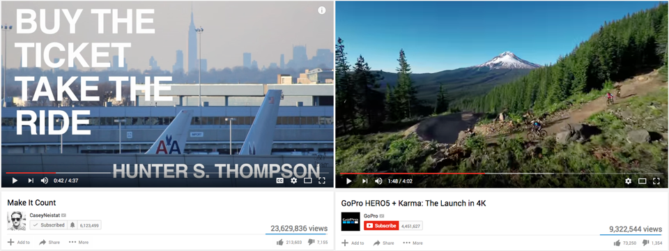

TravelMore KickStarter
My Role: Design Strategist | Producer
Time Frame: May 2016 - July 2016
Intro
TravelMore is an eCommerce company, which focuses on sourcing and selling travel gear. Starting in 2015 they were able to build the company from $0 to over $2,000,000 in sales to date. In the summer of 2016, they were starting to encounter a growth problem. They had designed a new backpack called the Jetpack 20L but did not know how to launch the product at scale. Their co-founder reached out to me to consult with the team as a design strategist. Over the course of two months, I was able to build an understanding of the user, establish a growth strategy, build a full kickstarter campaign, promote the product via social media and bring in ~900 sales equaling $50,000.
Strategy
Off the bat, the team knew we wanted to do a Kickstarter. The popular crowdfunding platform was a great way to capture new customers. We wanted to find those who generally align with the early adopter model. The downside is that Kickstarter is extremely competitive and more often than not, companies do not meet their funding goals. To learn the space, I read everything I could about good and bad campaigns. I recognized that there were two keys to meeting your funding goal. One, having a good product and two tell the right story.
Process
From my first meeting with TravelMore, I immediately knew they had done their research. The co-founders had traveled the world talking with backpackers who were on shoestring budgets. Through their conversations they identified a need. Global backpackers need a affordable daypack that was comfortable, collapsible and durable. I started with some simple competitive analysis of other players in the market. I saw that in this space, no one was catering to the traveler but rather the outdoorsy, camping hobbyist. We needed to understand who a potential buyer was. Who are they? What was their age? Do they work? What do they do for fun? Do they have a stable income? What inspires them and what pisses them off? We created a simple persona and coupled that with a mood board to show visually our user’s lifestyle.
Once the team understood the user, we could think about how to reach them most effectively. The new daypack was supposed to inspire travel and the lifestyle that came with being abroad. How do you communicate that via Kickstarter? We began to look for inspiration around how to frame what the message of our campaign should feel like. I understood that once someone lands on the page, we have moments to capture their attention. We needed something engaging that would convert them to a sale. I found inspiration in the popular vlogging videos by famous lifestyle YouTubers like Casey Neistat. I also wanted to incorporate the adventure aspect of traveling. I loved the way which action sport companies like GoPro and Redbull had the ability to tell a story with beautiful panning scenes and high impact words. This aligned with our users’ habits and the content that he or she consumed daily.
I began to start laying out a rough storyboard of what a potential campaign video would look like. It took shape trying to answer these five questions for our user.
- Who is TravelMore?
- What is their story?
- What is the product?
- What is the value?
- How do I buy one?
I wanted to make sure that the video was to the point. It would be the first thing the user sees and if it did not draw them in, we would fail. I set a two minute duration cap at most to force myself to achieve this goal. We were able to leverage our network of friends and gather a lot of b-roll footage which focused on adventure and excitement. I went back and forth with the co-founders on the messaging and the copy. We ended up working together and producing a one minute and thirty second long teaser. It was a happy medium of engaging and informative, achieving our original goal.
There was a strict $2000 advertising budget for this project.The majority was used to drive targeted Facebook ads. Our thought was social media was a big part of our user’s life and we had a hypothesis that Facebook might be the best way to communicate with customers. We set parameters with information from our original persona to find potential buyers. We also subscribed to a few booster websites but the ROI we found was not as high compared to direct ads.
Outcomes
The campaign was completed after 30 days and raised almost $50,000 exceeding the original funding goal by 650%.
Total impressions for the duration of the campaign was 46,936. Of those page views we had 28,234 users with an average bounce rate of 80.75%.
Of those people we were able to capture 19,901 views of the video with 33% of people watching the whole video.
Our growth was consistent day over day, compounding an average of around $1000 a day +/- around $500.

This brings our sale per session to $1.42 ($48,754 sales / 34,137 sessions).
I am proud to say that in the competitive space of Kickstarter, the TravelMore Jetpack 20L campaign was the fasted fully funded daypack in Kickstarter history.